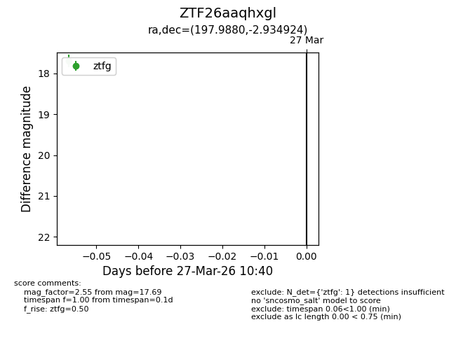
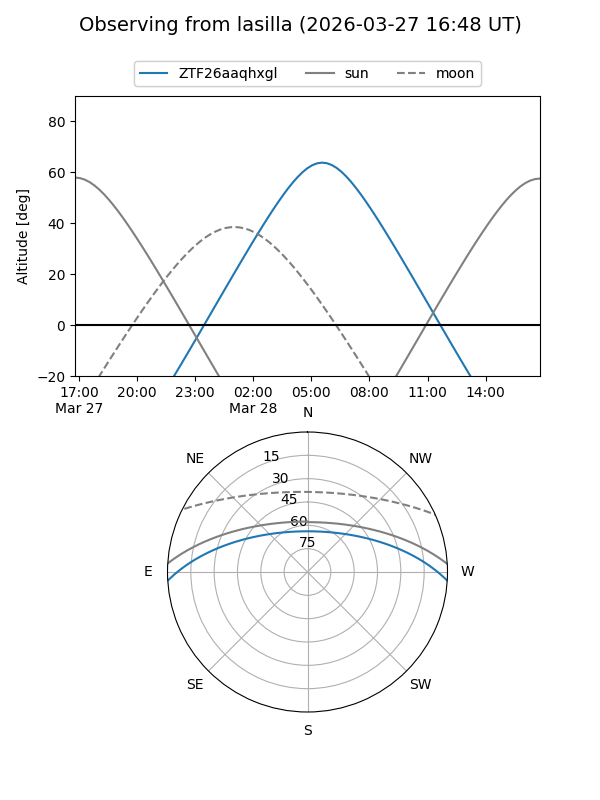
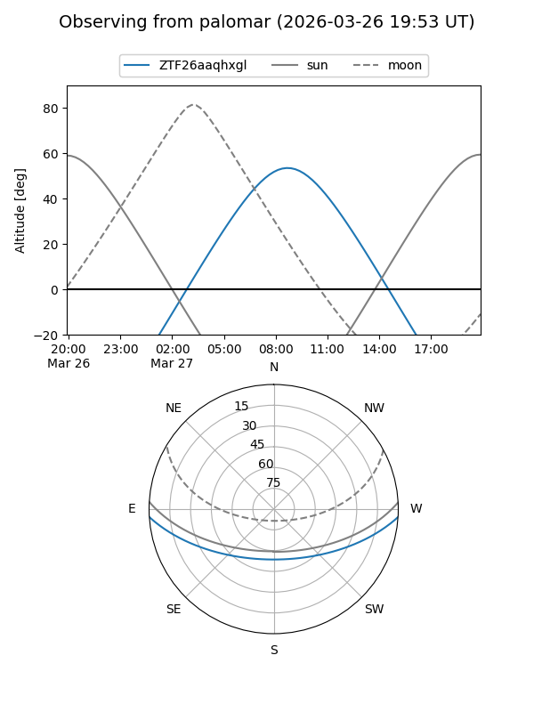

ZTF26aaqhxgl
Target ZTF26aaqhxgl at 2026-03-27 10:43
Aliases and brokers:
FINK: link
Lasair: link
ALeRCE: link
alt names
ZTF26aaqhxgl (ztf,fink_ztf)
Coordinates:
equatorial (ra, dec) = 197.9880,-2.93492
equatorial (HMS+DMS) = 13:11:57.11,-02:56:05.73
galactic (l, b) = (313.0724,+59.53232)
Flags:
Photometry:
last ztfg=17.69
1 ztfg detections
Lightcurve

Visibility


Additional plots